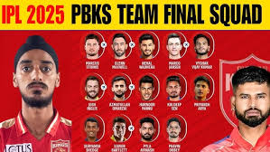

Punjab Kings
Revamped squad with explosive batting
About Punjab Kings

City: Mohali, Punjab
Home Ground: PCA Stadium, Mohali (Dharamsala for some matches)
Captain (2025): Shreyas Iyer
Owners: Preity Zinta, Ness Wadia, and others
Established: 2008 (as Kings XI Punjab, rebranded in 2021)
Punjab Kings are known for their aggressive batting and have the most centurions in IPL history.
[](https://indianexpress.com/section/sports/ipl/stats/most-hundreds/)Records and Achievements
IPL Titles
0 (runners-up in 2014)
Playoff Appearances
2
Notable Record
Highest team total: 245/6 vs Sunrisers Hyderabad (2025)
[](https://www.jagranjosh.com/general-knowledge/highest-team-score-in-ipl-1681906013-1)Key Player Stat
Shreyas Iyer: Second-most expensive player (₹26.75 crore)
[](https://www.hindustantimes.com/cricket/ipl/schedule)2025 Highlight
Fourth in points table with 8 points in 6 games.
[](https://www.hindustantimes.com/cricket/ipl/points-table)